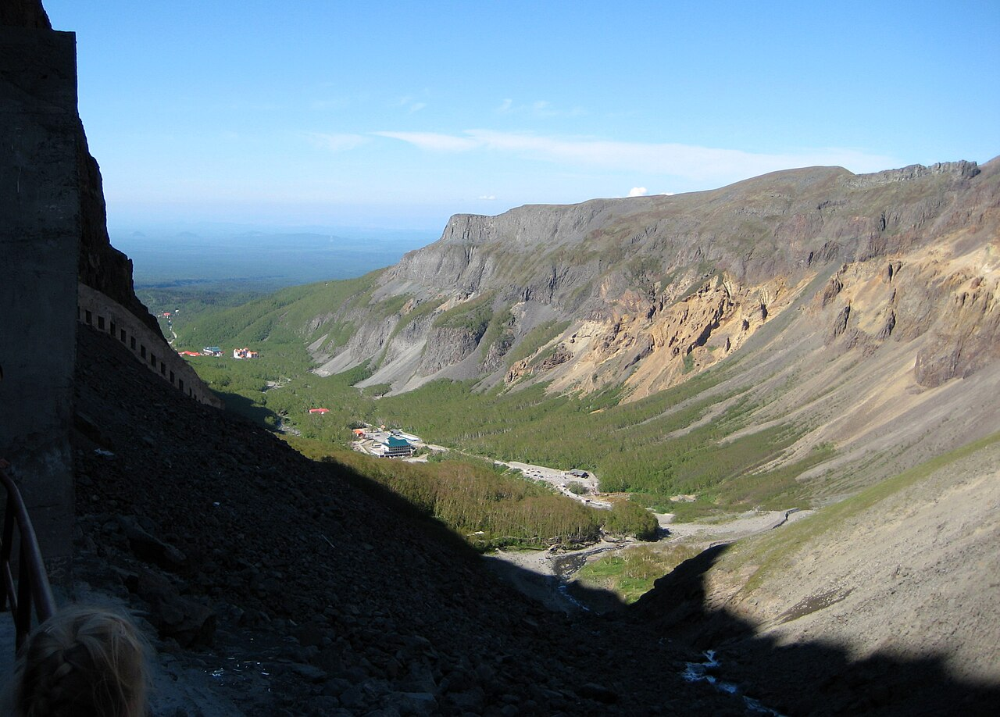

东北环线串联辽宁、吉林、黑龙江三省标志性景观：沈阳故宫、长白山天池、镜泊湖、哈尔滨中央大街、大连滨海路。夏季避暑、秋季五花山，冬季则可延伸冰雪主题（需另备防滑链）。
常见走向：沈阳—长春—长白山—镜泊湖—哈尔滨—五大连池（可选）—大连—沈阳。长白山北坡与西坡视野不同，需分别预约。镜泊湖吊水楼瀑布与火山口湖组合，是黑龙江经典。
7–9 月气候舒适，9 月中下旬吉林、黑龙江五花山摄影价值高。东北高速网络完善，但山区路段弯道多，雨天慎行。朝鲜族、满族饮食文化丰富，可安排美食停点。
Itinerary
分日行程
沈阳 → 长春
上午参观沈阳故宫、张氏帅府，下午高铁或自驾至长春。伪满皇宫、长影旧址博物馆可选。
长春 → 长白山
抵达长白山北坡门户二道白河，采购明日进山所需。可访美人松公园适应环境。
长白山北坡
换乘景区车至天池，天气决定能否见湖。长瀑布、温泉群、地下森林串联。山顶风大温低，备厚外套。
长白山 → 镜泊湖
西行进入黑龙江，镜泊湖吊水楼瀑布与火山口湖是核心。夏季水量充沛，冬季可赏冰瀑。
镜泊湖 → 哈尔滨
抵达哈尔滨，中央大街、圣索菲亚教堂、松花江夜景是标准组合。俄式西餐与马迭尔冰棍不可错过。
哈尔滨 → 大连
长途可改乘高铁至大连（汽车可托运或另租），若坚持自驾则经长春方向走 G1。大连滨海路、老虎滩、星海广场看海。
大连 → 沈阳
沿沈大高速返回，完成东北环线。可在鞍山短停千山（时间允许）。
Photo Essay
沿途影像




Highlights
核心景点
长白山天池
东北第一高峰白头山火山口湖，云雾常遮，见湖需运气。北坡开发成熟，西坡视野更开阔但需另入。
镜泊湖
中国最大的火山堰塞湖，吊水楼瀑布冬季冰瀑奇观。湖上可乘船访鹿苑等景点。
沈阳故宫
清朝入关前皇宫，大政殿与十王亭布局独特。与北京故宫对照参观，理解满汉建筑融合。
哈尔滨中央大街
面包石路与俄式建筑，冬季冰雕节闻名世界。夏季街头音乐与马迭尔冰棍同样经典。
大连滨海路
山海相连的沿海公路，傅家庄、棒棰岛、老虎滩串联。适合慢开摇下车窗看海。
Route
途经站点
东北门户
故宫、中街为必停。
天池核心
北坡西坡需分别预约。
火山湖泊
吊水楼瀑布为标志。
冰城夏都
中央大街、索菲亚教堂。
滨海终点
滨海路看海。
Practical
实用信息
- 长白山天池温度低，即使夏季也需羽绒服或厚冲锋衣。
- 镜泊湖、长白山门票与交通车需提前预约，旺季限流。
- 哈尔滨至大连里程长，可考虑高铁接驳节省体力。
- 9 月后东北早晚温差大，备保暖层。
- 尊重朝鲜族、满族等民族习俗，餐饮场所注意禁忌。
EV Tips
新能源出行提示
驾驶腾势 N7 等纯电 SUV 出发前，请特别注意以下事项：
- 沈阳、长春、哈尔滨、大连快充网络完善，长白山、镜泊湖景区周边需提前规划补能。
- 山区爬坡增加能耗，上山前在城镇补满电。
- 冬季若延伸冰雪游，低温对续航影响极大，需预留 50% 冗余。